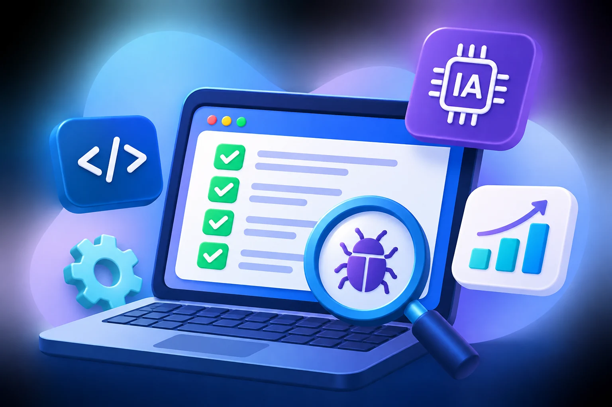

Aprende QA mediante rutas, módulos, práctica y recursos profesionales.
Fortalece tus habilidades en pruebas de software, certificaciones, automatización, rendimiento, inteligencia artificial y buenas prácticas ISTQB.

Academia
Cursos, guías y rutas prácticas en testing, ISTQB, automatización y QA con IA.
Ver aprendizaje →Simuladores
Practica con ejercicios, casos reales y simulaciones de certificaciones.
Practicar →Biblioteca QA
Artículos, guías, plantillas y recursos para fortalecer tu práctica.
Explorar biblioteca →IA aplicada a QA
Prompt engineering, agentes de IA, generación de pruebas y automatización.
Explorar →Empleo
Oportunidades, consejos y recursos para tu crecimiento profesional.
Ver empleo →Diagnóstico empresarial
Cuestionarios para evaluar la calidad del proceso de pruebas de software y obtener análisis con gráficos, tablas y recomendaciones.
Realizar diagnóstico →Recursos de la comunidad
Trainer ISTQB de Pablo Monsalvo, Adriana Troche Robles y el canal Calidad sin Humo en YouTube.
Conocer recursos →Contenido confiableBasado en estándares y buenas prácticas de la industria.
Aprendizaje prácticoEjercicios, simuladores y casos aplicados.
Comunidad activaRecursos y experiencias para seguir aprendiendo.
Continúa tu aprendizaje
Explora las opciones de inscripción y acceso a contenidos especializados.